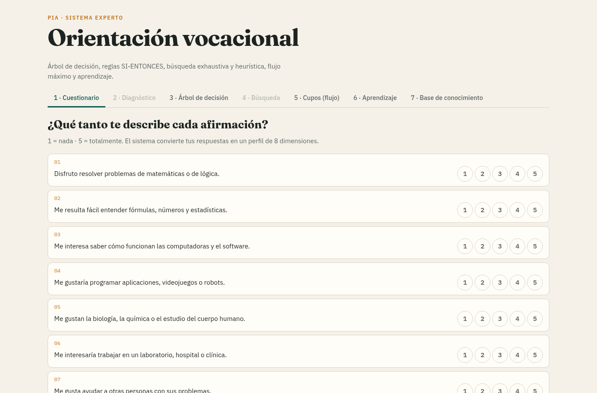
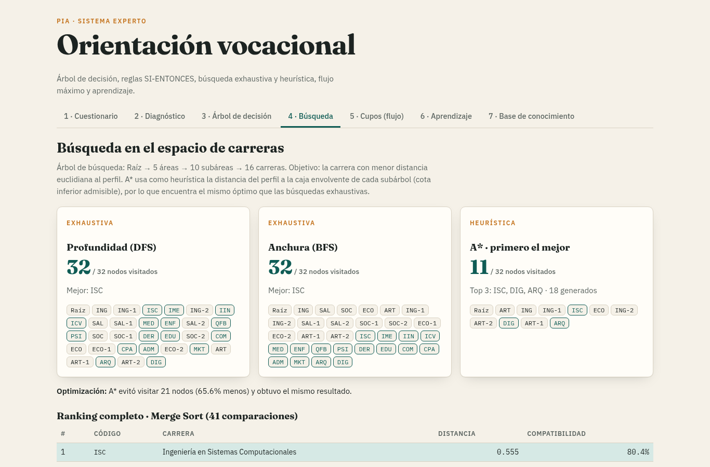
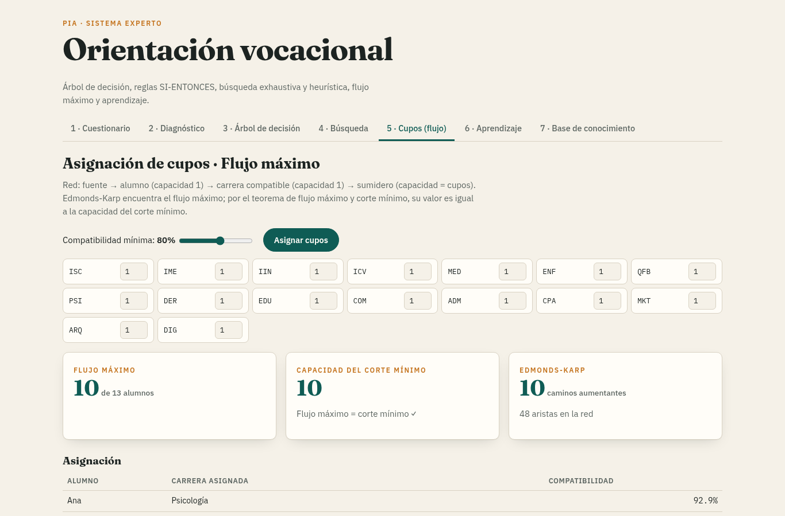
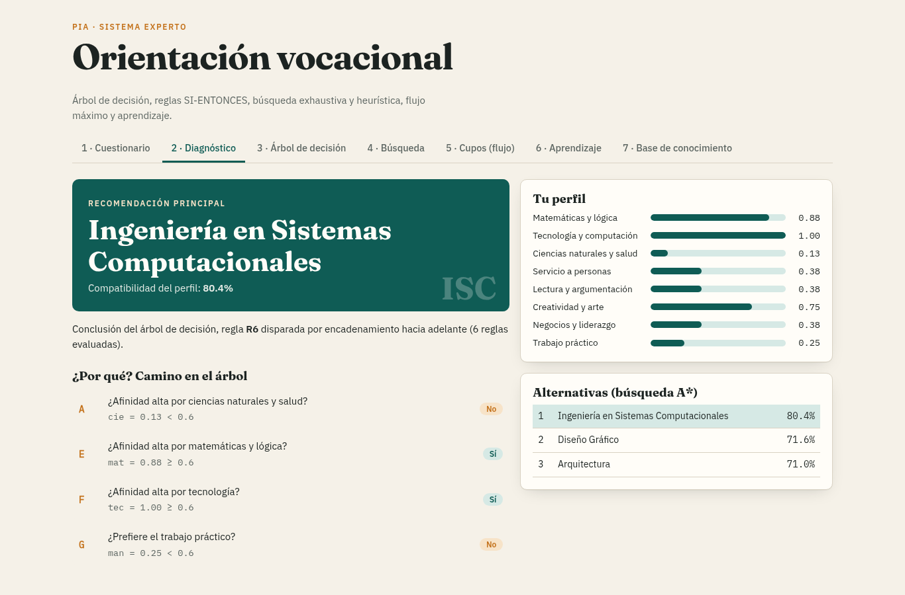

Árbol de decisión · Reglas · Búsqueda exhaustiva y heurística · Flujo máximo · Aprendizaje
| INTEGRANTE | CARRERA | MATRÍCULA |
|---|---|---|
| DE LEON RODARTE ALONSO DAVID | IAS | 2173878 |
| DE LA CRUZ ALONSO EDWIN ALEJANDRO | IAS | 2014770 |
| RAMOS RINCON FERNANDO YAHIR | IAS | 1995357 |
| ROSENBAUM LOPEZ LOTHAR PAUL | IAS | 2173867 |
| DAHIR GALLEGOS MARRUFO | IAS | 2097087 |
JavaScript puro · corre en el navegador sin instalación · lógica separada de la interfaz.
Sistema Experto de Orientación Vocacional · PIA16 preguntas (1 a 5), 2 por dimensión. Cada dimensión: (respuesta − 1) / 4 promediado → valor entre 0 y 1.
mat tec cie soc hum art neg man
Cada carrera tiene un prototipo: afinidad esperada en las 8 dimensiones, definida por el experto.

Izquierda = Sí, derecha = No. Resaltado: camino del perfil de ejemplo → Ingeniería en Sistemas Computacionales. La hoja “¿?” activa la búsqueda heurística.
Sistema Experto de Orientación Vocacional · PIAEspacio: Raíz → 5 áreas → 10 subáreas → 16 carreras (32 nodos). Meta: menor distancia euclidiana al perfil.
f = g + h.h(n) = distancia del perfil a la caja envolvente del subárbol: mínimo y máximo de cada dimensión entre sus carreras.

Recorridos del árbol
A B C D H-MED H-ENF H-PSI H-QFB E F G H-IME H-ISC H …
Merge Sort — divide y vencerás, O(n log n), estable.
Ordena las 16 carreras por compatibilidad: 41 comparaciones.
fuente → alumno (1) → carrera compatible (1) → sumidero (cupos)
Edmonds-Karp: caminos aumentantes por BFS en la red residual.

LVQ: el prototipo correcto se acerca al alumno, el equivocado se aleja.
w ← w ± α (x − w)
Simulación: 128 egresados con perfiles distintos al conocimiento inicial.

Sistema Experto de Orientación Vocacional · PIA¿Preguntas?
Sistema Experto de Orientación Vocacional · PIA